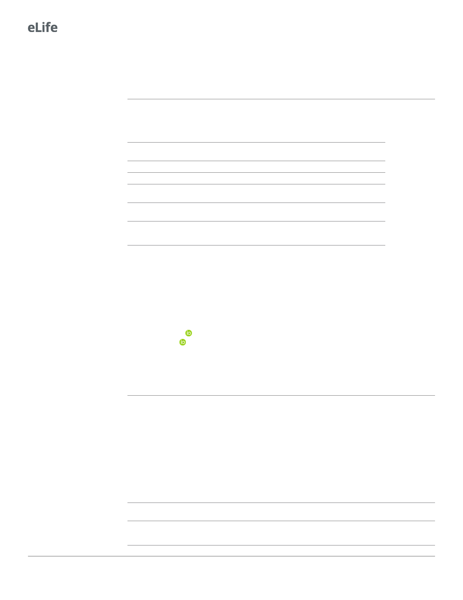

Research article
Microbiology and Infectious Disease
research award to BLB. AAB is a Howard Hughes Medical Institute Fellow of the Damon Runyon
Cancer Research Foundation, DRG-2302–17. The content is solely the responsibility of the authors
and does not necessarily represent the official views of the National Institutes of Health. The funders
had no role in study design, data collection and analysis, decision to publish, or preparation of the
manuscript.
Additional information
Funding
Funder
Howard Hughes Medical Insti-
tute
Grant reference number
National Institutes of Health 5R37GM065859
National Science Foundation MCB-1713731
Max Planck - Alexander von
Humboldt-Stiftung
Damon Runyon Cancer Re-
search Foundation
DRG-2302-17
Author
Bonnie L Bassler
Bonnie L Bassler
Bonnie L Bassler
Bonnie L Bassler
Andrew A Bridges
The funders had no role in study design, data collection and interpretation, or the
decision to submit the work for publication.
Author contributions
Andrew A Bridges, Conceptualization, Resources, Data curation, Formal analysis, Funding acquisi-
tion, Validation, Investigation, Visualization, Methodology, Writing - original draft, Writing - review-
ing and editing; Bonnie L Bassler, Conceptualization, Resources, Data curation, Formal analysis,
Supervision, Funding acquisition, Validation, Investigation, Writing - original draft, Project adminis-
tration, Writing - review and editing
Author ORCIDs
Andrew A Bridges
Bonnie L Bassler
Decision letter and Author response
Additional files
Supplementary files
. Supplementary file 1. c-di-GMP reporter output averages and standard deviations.
. Transparent reporting form
Data availability
All data generated and analyzed in this study are included in the manuscript and supporting files.
Source data files have been provided in Zenodo (https://doi.org/10.5281/zenodo.4651348).
The following dataset was generated:
Author(s)
Bridges AA, Bassler
BL
Year
2021
Dataset title
Inverse regulation of Vibrio
cholerae biofilm dispersal by
polyamine signals
Dataset URL
Database and
Identifier
Zenodo, 10.5281/
zenodo.4651348
17 of 20